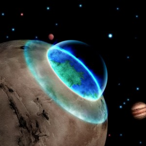

Diğer Gezegenleri Dünyalaştırmak: Terraforming
Petrolün bulunup işlenmeye başlanması, motorlu taşıtların icadı ve Sanayi Devrimi’nden sonra Dünya hızlı bir şekilde kirlenmeye başladı. Fabrikaların kimyasal atıkları, ormanların tahrip edilmesi, fabrika ve motorlu taşıtların atmosfere saldıkları karbondioksit Dünyanın dengesini bozmaya yetmiştir. Su kirliliği, hava kirliliği atmosferdeki ozon tabakasının zayıflaması (Ozon tabakası Güneşten gelen ultraviyole ışınlarını tutan tabaka) zararlarını göstermeye başladı. Küresel iklim değişiklikleri, asit yağmurları, kuruyan göller, nesli tükenen canlılar, kuraklık ve doğal felaketler bize yakın zamanda Dünyanın yaşanılamayacak bir yer olacağını gösteriyor. Bütün bunlar göz önüne alındığında bir soru sormamız gerekiyor. Dünya’yı terk etmek zorunda mı kalacağız? Bunun üzerine senaryolar üreten bilim insanları çalışmalara başladılar diyebiliriz. Bilim insanları Terraforming yani Dünyalaştırma fikrini geliştirdiler.
Terraforming Nedir?
Terraforming bir gezegeni ya da uydusunun koşullarını Dünya koşullarına benzetme, insanların yaşayabileceği bir hale getirmektir. Dünyalaştırmaya aday gezegenler Mars, Venüs, Jüpiter’in uyduları Ganymede, Callisto, Europa ve Satürn’ün uydusu olan Titan olarak düşünülmektedir. Bilim insanları dünyalaştırmak adına Mars’ı üzerinde çalışmalar yapmaktadır. Mars’ın kutuplarında karbondioksit buzulları olduğu düşülmektedir. Mars’ın kutuplarının hidrojen bombasıyla patlatılacak, sera etkisiyle sıcaklıklarda yükselme ve su kaynağında artış sağlanabilecektir. Mars’ta koloni kurma projeleri başlamış durumdadır. “Mars One” adlı projesi ile 2025 yılında Mars’ta bir koloni kurulması planlanıyor.
Uzaya çıkan insanlarda ani semptomlar görülebiliyor. Baş dönmesi, mide bulanması, kusma, denge kaybı gibi semptomlara Uzay tutması denmektedir. Uzayda geçen zaman içinde omurga ve kemiklerde erime görülebilmektedir. Uzay yolculuğuna çıkan astronotlar ciddi kemik kırılması yaşayabilirler. Bunu önlemek içinde çalışma yapılması gerekiyor. Bu astronotlar için psikolojik eğitimde söz konusudur. Diğer bir aday gezegen olan Venüs’te yüzey sıcaklığının 450 dereceyi bulması başlı başına bir sorundur. İnsanlığın yaşayabilmesi için bu sıcaklığın düşürülmesi gerekmektedir. Ayrıca Venüs’ün son derece yavaş dönmesi canlılar için uyum sorunu yaratacaktır. Diğer gezegen ve uydular içinde belli değişimlerin yapılması gerekmektedir.
Herhangi bir gezegende Dünyalaştırma gerçekleşebilirse insanlık için bir kaçış şansı olacaktır. Zira Dünya bu hızla kirlenmeye ve yaralanmaya devam ederse bu gezegende yaşamak söz konusu olamayacaktır. İnsanlığın Dünya için zararlı olan alışkınlıklardan vazgeçememesi Dünyalaştırma işine hız kazandırması gerektiğini gösteriyor.